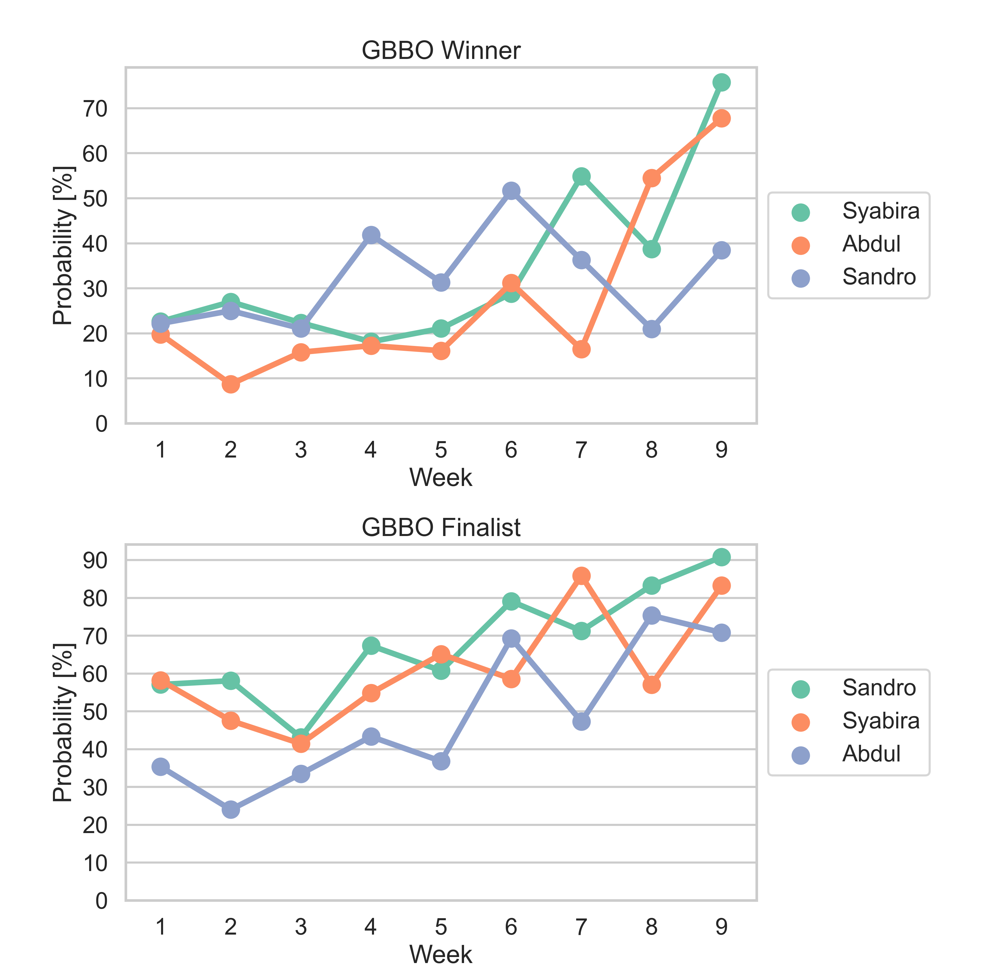

DeepBake Season 13
Predictions for season 13 updated weekly.
Most recent predictions
Details about predictions
Probabilities

| Baker | GBBO Winner | GBBO Finalist |
|---|---|---|
| Maxy | 54.8 | 71.7 |
| Janusz | 49.4 | 80.8 |
| Sandro | 31.3 | 60.7 |
| Syabira | 21.1 | 65.1 |
| Abdul | 16.1 | 36.8 |
| Dawn | 5.8 | 34.7 |
| Kevin | 3.4 | 13.8 |
| Carole | 0.4 | 3.4 |